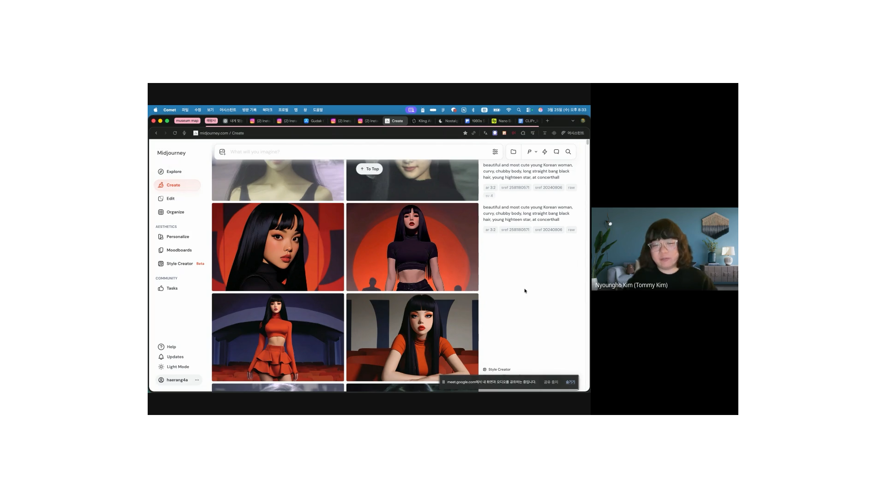
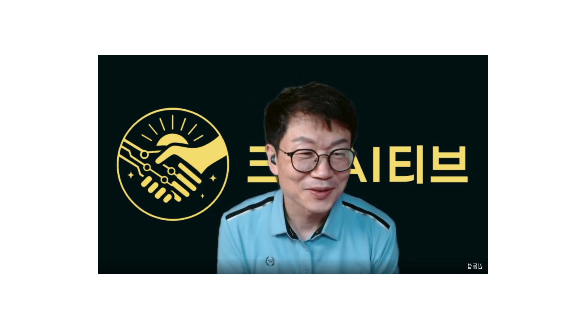
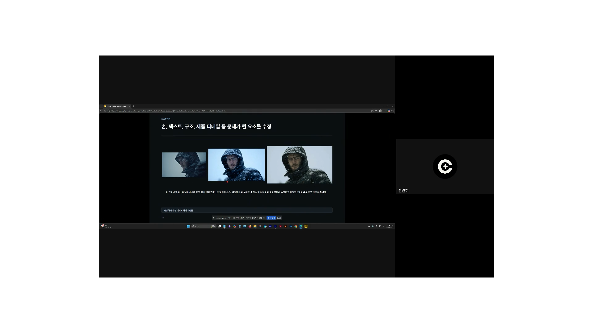

해랑사·찬란히 강연자로 나서, 감성 영상 제작부터 실사 품질 통제까지
크리AI티브가 2026년 3월 25일 온라인 웨비나를 개최했다. AI 영상 크리에이터 해랑사와 디자인 스튜디오 운영자 찬란히가 강연자로 나서, 각자의 실전 워크플로우를 약 109분에 걸쳐 공유했다.

첫 번째 강연자 해랑사는 현재 스톡폴리오 산하 AKA Production에서 크리에이티브 디렉터를 맡고 있다. 인스타그램·스레드에서 '해랑사' 계정을 운영하며 팔로워 1만 명, 최고 조회수 140만 뷰를 기록했다.
주제는 '내게 맞는 AI 영상 만들기'. 해랑사는 "처음에는 썰 방송 쇼츠로 수익화를 노렸지만 40개를 만들고 나서 허무감이 왔다"며, 이후 자신이 진짜 좋아하는 것—레트로 필름 감성, 동양 여성 인물, 노스탤지어—을 중심에 두고 콘텐츠 방향을 바꿨다고 설명했다.
그는 AI 영상 입문자에게 콘텐츠 기획 공식으로 세 가지 조합을 제시했다.
좋아하는 것 + 반응 있는 것 + 잘할 수 있는 것 = 나만의 채널 테마
툴 선택에서는 미드저니 v7(감성 이미지) + 클링 AI 3.0(영상 변환)을 핵심 조합으로 꼽았다. 사실적 광고 영상에는 나노바나나 프로/2를, 음성에는 일레브랜스와 클링 립싱크를 활용하고 있다고 밝혔다.
프롬프트 작성 기초도 다뤘다. 핵심은 다섯 요소—누가(캐릭터), 무엇을(행동), 어떤 앵글, 어떤 분위기, 어떤 톤—를 우선순위에 따라 배치하는 것이다. 해랑사는 "샷 정보를 프롬프트 맨 앞에 두고, 분위기와 무드는 제일 뒤로 빼야 의도대로 결과가 나온다"고 강조했다.
미드저니 고급 설정으로는 스타일 레퍼런스(SRF)와 --sv4 파라미터 조합을 소개했다. 해랑사 계정 특유의 톤을 일관되게 유지하는 핵심 파라미터라고 설명했다.
클링 AI 멀티샷 기능 활용 팁도 공유됐다. 6컷 중 마지막 컷은 자주 잘려 5컷을 기준으로 작업하고, 인물의 의상·색감·장소를 일관되게 유지하는 프롬프트(must maintain exact same character appearance)를 반드시 공통 프롬프트에 포함해야 한다고 조언했다.
마지막으로 업로드 전략도 짚었다. 인스타그램 릴스에서 트렌딩 음원을 적용했을 때 조회수가 최대 10배 차이가 난다고 했다. 해랑사가 140만 뷰를 기록한 영상도 인스타그램에서 반복 재생되던 음원을 적용한 결과였다.

두 번째 강연자 찬란히는 게임 배경 원화가를 시작으로 기업 디자이너, e스포츠 구단 디자이너를 거쳐 현재 찬란히 디자인 스튜디오를 운영하고 있다. 제품 컨셉 샷, 룩북, 무드 이미지 제작부터 최근에는 쇼츠 광고 영역까지 확장 중이다.
주제는 '실사 AI 영상, 덜 어색하게 만드는 법'. 찬란히는 "영상 퀄리티는 영상 툴 단계에서 갑자기 생기지 않는다"며, 그 이전 단계—이미지 설계, 현실감 설계, 오류 제거, 컬러 매칭—가 결과물을 결정한다고 강조했다.

찬란히가 제시한 이미지 4원칙은 다음과 같다.
미드저니를 우선 사용해 구도와 톤 앤 매너를 잡는다. 이 단계에서 정한 무드와 미학적 방향이 이후 전체 컷에 흐르게 된다.
AI는 피부를 너무 매끈하게 처리하는 경향이 있다. 나노바나나에서 모공, 솜털, 비대칭, 색수차, 렌즈 먼지 등 광학·질감 프롬프트를 미세하게 추가해 "완벽하지 않은 현실"을 복원한다. "너무 완벽한 대칭은 오히려 비인간적으로 느껴진다."
AI 툴을 계속 돌려 오류를 잡으려 하면 다른 부분이 무너진다. 글자 뭉개짐, 손 왜곡, 눈꽃 크기 이상 등 자잘한 문제는 포토샵에서 직접 손보는 게 더 빠르고 정확하다.
컷별로 따로 보면 괜찮아도, 붙여놓으면 온도감·명암·채도가 달라 같은 프로젝트처럼 안 느껴지는 경우가 많다. 포토샵 또는 라이트룸으로 기준 컷과 나머지 컷의 색 온도·대비·채도를 맞춘 뒤 영상 단계로 넘어간다.
영상화 단계에서는 프롬프트 간결화 원칙을 강조했다. "핵심 움직임 하나를 먼저 고정하고, 보조 움직임은 한두 개만 붙인다. 한 클립에 서사 전체를 넣으려 하면 결과가 불안정해진다."
찬란히는 "AI가 들어왔다고 디자이너의 미감과 수정 능력이 덜 중요해진 게 아니라 오히려 더 중요해졌다"며 강연을 마무리했다.
이번 세미나는 수익화나 트렌드 추종보다 자신의 색깔 기반 콘텐츠 전략(해랑사)과 납품 가능한 품질 기준의 체계적 프로세스(찬란히)라는 두 가지 관점을 함께 다뤘다는 점에서 주목받았다. 크리AI티브는 실무자와 크리에이터 모두를 위한 AI 활용 세미나를 지속적으로 개최할 예정이다.